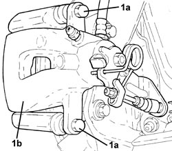
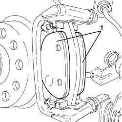
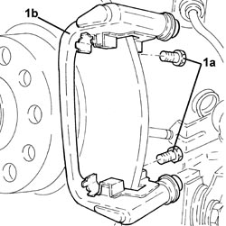
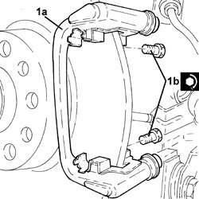

3310B57 REAR BRAKE CALIPER BRACKET (ONE), LEFT OR RIGHT - R.R.
- Path
- Procedures > 33 BRAKES > 3310 DISC BRAKES > 3310B REAR DISC BRAKES > 3310B57 REAR BRAKE CALIPER BRACKET (ONE), LEFT OR RIGHT - R.R.
- Kind
- repair procedure (removal / refitting; the operation number is the code)
- Applies to
- all engines; all production periods
- Interactive page
- https://sloeber94.github.io/elrnDB-aBrrSpdr/en/#/946002122
Applies to: all engines; all production periods
 Removing
Removing
 Refitting
Refitting- Position the vehicle on a lift.
Op. 4450B06 LEFT REAR WHEEL - R.R
1. Undo the bolts (1a) and remove the rear brake caliper (1b) from the bracket.

Applies to: all engines; all production periods
1. Remove the rear brake pads.

Applies to: all engines; all production periods
1. Undo the bolts (1a) and remove the rear brake caliper bracket (1b).

Applies to: all engines; all production periods
- Working at the bench, separate the rear brake caliper bracket from the brake pad retaining clips.
Applies to: all engines; all production periods
Refitting
Removing- Place the brake pad retaining clips in their housings in the rear brake caliper bracket.
1. Position the rear brake caliper bracket (1a) in its housing and secure it tightening the bolts (1b) to the recommended torque.
Component | Fastening | dia | Value (daNm) | Validity |
|---|---|---|---|---|
Rear brake calliper brackets | Bolt | M10 | 5.4 ÷ 6.0 |

Applies to: all engines; all production periods
- Place the front brake pads in their housings.
- Position the rear brake caliper in its housing and secure it tightening the bolts to the recommended torque.
Component | Fastening | dia | Value (daNm) | Validity |
|---|---|---|---|---|
Rear brake callipers | Bolt | M8 | 3.1 ÷ 3.8 |
Op. 4450B06 LEFT REAR WHEEL - R.R
- Remove the vehicle from the lift.